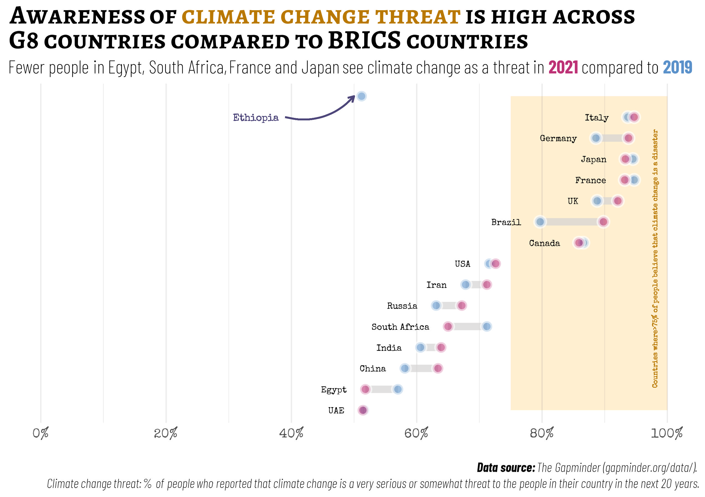

Welcome
The practical exercises on this page are designed to help you develop advanced skills in creating well-designed and informative graphics with free, open-source statistical analysis software like R/RStudio.
In this practical exercise, you will apply your knowledge of how to
customize ggplot2 graphics.
Specifically, you will learn to :
- map data → aesthetics → graphics
- create a ggplot graphic using the relevant
geom_ - add layers to a ggplot graphic as necessary
- load and import Google fonts into an R session
- specify and change color related aesthetics
- modify components of a theme
Before taking this week’s practical exercise, please make sure that
you are already familiar with
ggplot
basic.
You can also read this chapter on Getting Started with ggplot2 for additional support.
   
Prerequisites
I‚Äôve installed and pre-loaded the following r-packagesüì¶ for this tutorial:
library (readr)
library (ggplot2)
library (dplyr)
library (tidyr)To practice these skills, we will use global data aggregated by Gapminder-an independent Swedish foundation that fights devastating misconceptions and promotes a fact-based worldview everyone can understand. The Gapminder data page includes data on various indicators that have been inherited from Gapminder World, compiled manually as well as those that are direct copy from the World Bank.
For this practice exercise, I have already downloaded data on some of these indicators for you and stored them in a data folder in our online working directory. These includes data on:
climate change: This measures the % of people who says that climate change is a very serious or somewhat threat when asked the following question in the Gallup World Poll: “Do you think that climate change is a very serious threat, a somewhat serious threat, or not a threat at all to the people in this country in the next 20 years?”. Additional information can be found hereEnvironmental polution: This measures Carbondioxide emissions per capita Consumption based, tonnes per capita. Additional information can be found hereLabour force: The labour force participation rate measures the percentage of all labour to the total population of working-aged people (15-64 years). Additional information can be found here.Sanitation: The percentage of people using at least basic sanitation services, that is, improved sanitation facilities that are not shared with other households. This indicator encompasses both people using basic sanitation services as well as those using safely managed sanitation services. Improved sanitation facilities include flush/pour flush to piped sewer systems, septic tanks or pit latrines; ventilated improved pit latrines, compositing toilets or pit latrines with slabs. Additional information can be found here.
I have also preloaded each one of these data sets for you. Data on
climate change is stored as climate, environmental
pollution stored as co2_pcap, labour force data stored as
lfp and sanitation stored as sanitation. I
also cleaned the data (using the tidy principles) and merged them into a
single data file that has been stored as study_dta.
If you are ready to begin, click on!
Intermediate data visualization with ggplot2
Looking ahead
In the previous lecture, we have covered some of the ways in which you can visualise patterns in a quantitative data. In this exercise, we will build on the skills you have acquired in Topic 2 to create a Dumbbell chart to visualize changes in the percentage of adults who says that climate change is a very serious or somewhat threat.

I have already cleaned and restructured the data in a format desirable for our data visualisation. Next, we will begin developing the layers for our graphic. Our goal is to create a ggplot layer and add a segment layer to the graph. Your line segment graph should show the percentage change (between 2019 and 2021) in adults who believe that climate change is a threat across the BRICS and G8 countries.
You would note that geom_segment() takes two values for
each of x (x and xend) and y-axis (y and yend). For the y-axis we have
kept the values the same for both y and yend. However, for the x-axis
you need to map the percentage of adults who see climate change as a
threat for each year to one of x and xend. I have already pre-filled the
code chunk for you below. Your task is to replace the blanks with the
correct values.
graph_dta %>%
ggplot () +
geom_segment(aes(y = country, yend = country,
x = ___, xend = ___))Hint: Have you mapped the correct variable names to
the correct aesthetics?
To map column names with numeric values,
you’ll need to put the values between two backticks. E.g
2012 instead of 2012.
Excellent work!. Now let’s customize the line segment graph even further. We will change the color and increase the thickness and transparency of the lines. I have already pre-filled parts of the code for you. Your new task is to replace the blanks by increasing the thickness of the lines to 3 and the transparency to 0.7.
graph_dta %>%
ggplot () +
geom_segment(aes(y = country, yend = country,
x = `2019`, xend = `2021`),
color = "#D4d2d3",
___ = ___,
___ = 0.7)Hint: Have you mapped the correct values to the right aesthetics?
We are getting there! You might have observed that the line segments are not well ordered in the previous graphic. We can reorder them especially on the y-axis to make this graphic more visually appealing and information.
You have learnt in the lecture that there is a function that you can use to re-order values on the y-axis. Your next exercise is to use that function to re-order values on the y-axis based on the % of adults who see climate change as a threat in 2021.
graph_dta %>%
ggplot () +
geom_segment(aes(y = ___(country, ___),
yend = ___(country, ___),
x = `2019`, xend = `2021`),
linewidth=3,
color = "#D4d2d3",
alpha = 0.7)Hint: Have you mapped the correct variable names to
the correct aesthetics?
Are you using the right function to reorder
values on the y-axis.
Awesome! We have a visually appealing line-segment graph. Next, we
will add a point layer to our graphic using geom_point().
The point layer should show the percentage of adults who see climate
change as a threat in 2019. Your next task is to replace blanks in the
following code chunk with the right values.
graph_dta %>%
ggplot () +
geom_segment(aes(y = reorder(country, `2021`),
yend = reorder(country, `2021`),
x = `2019`, xend = `2021`),
linewidth=3, color = "#D4d2d3",
alpha = 0.7) +
geom_point (aes(y = ___, x = ___))Hint: Have you mapped the correct variable names to
the correct aesthetics?
Have you reordered the y-axis values in the
new layer?
This is looking good, isn’t it? Your next task is to increase the size of the points to 3pt. Because of the likelihood of overlapping points with 2021, we will adjust the transparency of the points to 0.6. Your task is to replace the blanks with the correct arguments to make these changes.
graph_dta %>%
ggplot () +
geom_segment(aes(y = reorder(country, `2021`),
yend = reorder(country, `2021`),
x = `2019`, xend = `2021`),
linewidth=3, color = "#D4d2d3",
alpha = 0.7) +
geom_point (aes(y = ____, x = ___),
___ = 3, ___ = 0.6)Hint: Have you mapped the values to the correct aesthetics/arguments?
Let’s tweak the points even further. We will change the shape/style of the points as well as the thickness of the outline of the point. The point style should be 21 so that we can adjust the fill and outline colors. We also need to change the thickness of the outline of the points to 2 so that they are more visible in the plots. Lastly, we will change the fill color to blue (“#5a91ca”) and the outline color to white (‘white’). I have already pre-filled parts of the code for you in the chunk below. Your task is to replace the blanks with the correct arguments and values.
graph_dta %>%
ggplot () +
geom_segment(aes(y = reorder(country, `2021`),
yend = reorder(country, `2021`),
x = `2019`, xend = `2021`),
linewidth=3, color = "#D4d2d3",
alpha = 0.7) +
geom_point (aes(y = reorder(country, `2021`), x = `2019`),
size = 3, ___ = 0.6,
___ = 21, stroke = 2,
___ = "white", ___ = "#5a91ca")Hint: Have you mapped the values to the correct aesthetics/arguments?
You may have observed that values for the y-argument is the same for
both plotting layers (line-segment and point). Rather than repeating the
same argument on multiple layers, we can do this more efficiently by
moving the y-aesthetic to the base layer in ggplot(). See
the code structure below.
graph_dta %>%
ggplot (aes(y = reorder(country, `2021`))) +
geom_segment(aes(yend = reorder(country, `2021`),
x = `2019`, xend = `2021`),
linewidth=3, color = "#D4d2d3",
alpha = 0.7) +
geom_point (aes(x = `2019`),
size = 3, alpha = 0.6,
shape = 21, stroke = 2,
color = "white", fill = "#5a91ca")In the previous challenge, you have added a point layer for the % of
people that see climate change as a threat in 2019. We need to also do
the same for the year 2021. Your next task is to add another point layer
to our graph. We will follow the same logic as 2019 but with a different
fill color. I have already added this new plotting layer for you and
your task is to replace the blanks in the code chunk below. You should
also remember to keep aesthetics that are repeated across layers in
ggplot().
graph_dta %>%
ggplot () +
geom_segment(aes(y = reorder(country, `2021`),
yend = reorder(country, `2021`),
x = `2019`, xend = `2021`),
linewidth=3, color = "#D4d2d3",
alpha = 0.7) +
geom_point (aes(y = reorder(country, `2021`), x = `2019`),
size = 3, alpha = 0.6,
___ = 21, ___ = 2,
color = "white", fill = "#5a91ca") +
geom_point (aes(___),
size = 3, alpha = 0.6,
___ = 21, ___ = 2,
color = "white", fill = "#bd3175")Hint: Have you moved the y-aesthetic to the base layer?
The graph is gradually looking great. The next step is for us to add
a rectangular layer to our plot to highlight countries where more than
80% of the people see climate change as a serious threat. We can do this
by using geom_rect which takes the following arguments:
xmin, ymin, xmax,
ymax, in addition to other well known arguments.
I have pre-filled parts of the code for you and your next task is to replace the blanks. Since you we are drawing a rectangle from the lower part of the graph to the upper part, you’ll need to specify map the countries on the lower and upper end of the graph to ymin and ymax respectively. For the width of the rectangle, we are only interested in shading the areas above 80%, that is, 80%-100%.
graph_dta %>%
ggplot (aes(y = reorder(country, `2021`))) +
geom_segment(aes(yend = reorder(country, `2021`),
x = `2019`, xend = `2021`),
linewidth=3, color = "#D4d2d3",
alpha = 0.7) +
geom_point (aes(x = `2019`),
size = 3, alpha = 0.6,
shape = 21, stroke = 2,
color = "white", fill = "#5a91ca") +
geom_point (aes(x = `2021`),
size = 3, alpha = 0.6,
shape = 21, stroke = 2,
color = "white", fill = "#bd3175") +
geom_rect(aes(ymin = ___,
ymax = ___),
___ = 75, ___ = 100,
fill = "#ffa600")Hint: Have you mapped the values to the correct aesthetics?
You would notice that the orange rectangle is overshadowing other layers in the graph. We can fix this by switching the position of the rectangular layer either before the point layers, or before the line-segment layer. Your task is to find a suitable position for the rectangular layer and position appropriately. Lastly, you will need to reduce the color intensity of the rectangle. We can achieve this by setting the transparency of the rectangle to 0.01.
graph_dta %>%
ggplot (aes(y = reorder(country, `2021`))) +
geom_segment(aes(yend = reorder(country, `2021`),
x = `2019`, xend = `2021`),
linewidth=3, color = "#D4d2d3",
alpha = 0.7) +
geom_point (aes(x = `2019`),
size = 3, alpha = 0.6,
shape = 21, stroke = 2,
color = "white", fill = "#5a91ca") +
geom_point (aes(x = `2021`),
size = 3, alpha = 0.6,
shape = 21, stroke = 2,
color = "white", fill = "#bd3175") +
geom_rect(aes(ymin = "UAE",
ymax = "Ethiopia"),
xmin = 75, xmax = 100,
fill = "#ffa600") Hint: Have you mapped the correct variable names to the correct aesthetics?
Excellent work. Now, our base graphic layer is ready. Let’s assign
this graphic to an image object that we can call subsequently to add
more layers. Your next task, is to assign the code chunk below to an
object bell_chart.
___ graph_dta %>%
ggplot (aes(y = reorder(country, `2021`))) +
geom_rect(aes(ymin = "UAE", ymax = "Ethiopia"),
xmin = 75, xmax = 100,
fill = "#ffa600", alpha = 0.01) +
geom_segment(aes(yend = reorder(country, `2021`),
x = `2019`, xend = `2021`),
linewidth=3, color = "#D4d2d3",
alpha = 0.7) +
geom_point (aes(x = `2019`),
size = 3, stroke = 2,
alpha = 0.6, shape = 21,
color = "white", fill = "#5a91ca") +
geom_point (aes(x = `2021`),
size = 3, alpha = 0.6,
stroke = 2, shape = 21,
color = "white", fill = "#bd3175")
bell_chartHint:
Have you moved the rectangular layer
before the line segment and assigned the graphics object to
bell_chart?
You would notice in our sample graph that the countries are
positioned next to each dumb bell. We can achieve this with
geom_text(). On the y-axis, we will map the ordered
countries, and on the x-axis, we will map the percentage of people who
see climate change as a threat in 2019 or 2021 (whichever is lower)
minus three. Remember that we don’t have to specify the
y-axis aesthetic in this layer because we have already added it to the
base layer in the previous code chunk.
Beside the positions, we also need to map countries to the label aesthetic. Lastly, we need to right-align the labels and set the font size as 3.6. I have already pre-specified the text layer for you in the code chunk below. Your task is to replace blanks with the right aesthetic and value.
bell_chart_1 <- bell_chart +
geom_text(aes(x = ifelse(`2021` > `2019`,
`2019` - 3,
`2021` - 3),
___ = country),
hjust = ___, size = 3.6)
bell_chart_1Hint: Have you mapped the correct variable names to the correct aesthetics?
We have now added a text layer to our graphic but we can make the text more visually appealing by changing the font family to “special”.
bell_chart_1 <- bell_chart +
geom_text(aes(x = ifelse(`2021` > `2019`,
`2019` - 3,
`2021` - 3),
___ = country),
hjust = ___, size = 3.6,
___ = "special")
bell_chart_1Hint: Have you specified the right argument/aesthetic for changing font family.
You would notice that font style (special) wasn’t rendered. That’s
because we have not loaded the font into our working session. To do
that, we will need to install some packages (showtext,
extrafont, ggtext), load the libraries, import
the fonts to our R-workspace, and initiate a font renderer.
Let’s take this step-by-step. We will need to load the necessary pacakges. I have already installed them for you.
Hint:
Have you load the libraries in the right
order: showtext, extrafont,
ggtext?
Below I have loaded the required font from Google using
font_add_google():
font_add_google("Barlow Condensed",
family = "barlow",
regular.wt = 200)
font_add_google("Special Elite",
family = "special")
font_add_google("Alegreya SC",
family = "alegreya_sc")Hint:
Next, we need to initiate showtext to render the text and graphics. Your next task is to use the appropriate function to initiate showtext.
font_add_google("Barlow Condensed",
regular.wt = 200,
family = "barlow")
font_add_google("Special Elite",
family = "special")
font_add_google("Alegreya SC",
family = "alegreya_sc")
___Hint:
Are you using the right function?
Now, let’s do this again. You need to map countries to the label aesthetic, right-align the labels and set the font size as 5.5. Lastly, make the text label more visually appealing by changing the font family to “special”.
bell_chart_1 <- bell_chart +
geom_text(aes(x = ifelse(`2021` > `2019`,
`2019` - 3,
`2021` - 3),
___ = country),
hjust = ___, size = 3.6,
___ = "special")
bell_chart_1Hint: Have you mapped the correct variable names to the correct aesthetics?
Next we will add another layer to the last image object we created:
bell_chart_1. Your task is to add a text label to explain
the shaded area. This text label can be positioned on the same line as
USA, and at 98%. The text should also be center aligned (0.48), rotated
at 90 with a 2 font size. Your next task is to replace the blanks with
the appropriate values/argument.
bell_chart_2 <- bell_chart_1 +
geom_text(___ = 98, ___ = "USA",
___ = 'Countries where>75% of people believe that climate change is a disaster ',
___ = 90, ___ = 0.48, ___ = 2,
color = "#b97800", family = "special")
bell_chart_2Hint: Have you mapped the values to the correct
aesthetics?
You can rotate texts with angle
Horizontal alignment can be adjusted with hjust.
Excellent! You may have noticed that data points for all the countries have been labelled except for Ethiopia. This might make interpreting the plot difficult for readers and we can make address this by annotating the graph.
Our next task, is to add a text layer to the graphic with the label “Ethiopia”. The text should be positioned at 38% and on the same line as Italy. The text should be right aligned with size 4. I have already pre-filled the code chunk for you and your task is to replace the blanks with the appropriate argument/values.
bell_chart_2 <- bell_chart_1 +
geom_text(x = 98, y = "USA",
label = 'Countries where>75% of people believe that climate change is a disaster ',
angle = 90, hjust = 0.48, size = 2,
color = "#b97800", family = "special") +
geom_text(___ = 38, ___ = "Italy",
___ = 'Ethiopia',
___ = 1,
size = 4, ___ = "#4d467a",
___ = "special")
bell_chart_2Hint: Have you mapped the values to the correct
aesthetics?
Texts can be colored with the color
argument not fill.
Great job! We have now added a text layer but it may still be add to
link the text to the point. We can also address this by adding a curved
layer to graphic. geom_curve() allows us to add a curved
layer to a graphic by taking the following arguments: x, xend, y, yend
alongside all other arguments that you are already familiar with.
The curved line should be positioned between Italy and Ethiopia on the y-axis and should go from 39-50% on the x-axis. We can also adjust the width of the line (0.7). We can also add an arrow to the curved line using the arrow argument. Your task is to replace the blanks with the appropriate value and you are also free to play around with the values.
bell_chart_2 <- bell_chart_1 +
geom_text(x = 98, y = "USA",
label = 'Countries where>75% of people believe that climate change is a disaster ',
angle = 90, hjust = 0.48, size = 2,
color = "#b97800", family = "special") +
geom_text(x = 38, y = "Italy",
label = 'Ethiopia',
hjust = 1,
size = 4, color = "#4d467a",
family = "special") +
geom_curve(___ = "Italy", ___ = "Ethiopia",
___ = 39, ___ = 50,
color = "#4d467a", ___ = 0.7, curvature = 0.3,
arrow = arrow(length = unit(0.2, 'cm')))
bell_chart_2Hint: Have you mapped the values to the correct aesthetics?
You are probably looking forward to the end already. Don’t worry we are almost there.
You might have also noticed that our x-axis starts at ~50%, primarily because that is that is the lowest percentage of people who see climate change as threat. The challenge with truncated axis is that sometime, they make small differences look big. To solve this issue, we can set the limits of our x-axis from 0-100. We can also customize the breaks between the limit and define the label. Your task below is to replace the blanks with the appropriate values:
- Set the x-axis to go from 0 to 100 with a 20% break (e.g. 0, 20, 40, … 100).
- Add a percentage logo at the end of each number so that it’s clear that the values presented are percentages.
bell_chart_3 <- bell_chart_2 +
scale_x_continuous(limits = ___,
breaks = ___,
___ = function(x) paste0(x, "%"))
bell_chart_3Hint: Have you mapped the values to the correct aesthetics?
In the following code, I am specifying labels for each section of the graphics such as title, subtitle, and caption. I’m scripting these titles using HTML to add colors and change the font style and face. In the following code-chunk, you do not have to do anything and you can play around with the values.
bell_chart_3 <- bell_chart_2 +
scale_x_continuous(limits = c(0,100),
breaks = seq(0,100,20),
labels = function(x) paste0(x, "%")) +
labs (title = "Awareness of climate change threat is high across <br>G8 countries compared to BRICS countries",
subtitle = "Fewer people in Egypt, South Africa, France and Japan see climate change as a threat in <span style = 'color:#bd3175;'>**2021**</span> compared to <span style = 'color:#5a91ca;'>**2019**</span>",
caption = "<br><strong>Climate change threat:</strong> Percentage of people who reported that climate change is a <br>very serious or somewhat threat to the people in their country in the next 20 years.")
bell_chart_3We have now successfully created all the layers for graphic. Our final task is to apply and customize a theme to make the graph more visually appealing. Your next task is to remove the axis titles and axis text (only for the y-axis). You should also remove the major panel grids on the y-axis.
bell_chart_4 <- bell_chart_3 +
theme_minimal() +
theme (axis.text.x = element_text(size = 8,
family = "special"),
axis.title = ___,
axis.text.y = ___,
___ = ___)
bell_chart_4Hint: Have you mapped the values to the correct aesthetics?
Great job! We now have a great data visualisation showing the distribution of adults in the population who see climate change as a serious threat. However, this is only known to us and not our readers without a descriptive title for the graph. Your final task in this exercise is to add a descriptive title to the graph.
bell_chart_4 <- bell_chart_3 +
theme_minimal() +
theme (axis.text.x = element_text(size = 8,
family = "special"),
axis.title = element_blank(),
axis.text.y = element_blank(),
panel.grid.major.y = element_blank(),
plot.title = element_markdown(hjust = 0,
family = "alegreya_sc",
face = "bold",
lineheight = unit(0.8, "pt"),
size = 23),
plot.subtitle = element_markdown(hjust = 0,
family = "barlow",
lineheight = unit(1.2, "pt"),
size = 15),
plot.caption = element_markdown(hjust = 1,
size = 12,
family = "barlow",
face = "italic",
lineheight = unit(0.8, "pt")))
bell_chart_4Hint: Have you mapped the values to the correct aesthetics?